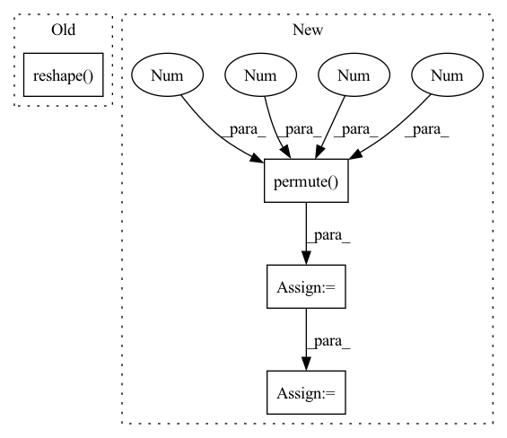

Pattern ID :2686

Before Change
for x, net, codebook, k in zip(latents, self._prob, self._codebook, self._k):
n, c, h, w = x.shape
// [n, c, h, w] -> [h, w, n, c] -> [h*w, n, c]
x = self._encoder(x.permute(2, 3, 0, 1).reshape(-1, n, c))
// [h*w, n, k] -> [n, h*w, k]
logit = net(x).permute(1, 0, 2)
sample = F.gumbel_softmax(logit * self._d, temperature, hard)
After Change
targets.append(xRaw)
n, c, h, w = xRaw.shape
// [n, c, h, w] -> [h, w, n, c] -> [h*w, n, c]
encoderIn = xRaw.permute(2, 3, 0, 1).reshape(-1, n, c)
x = self._encoder(encoderIn)
// [h*w, n, k] -> [n, h*w, k]
logit = net(x).permute(1, 0, 2)
sample = F.gumbel_softmax(logit * self._d, temperature, hard)
// [N, h*w, c] <- [N, h*w, k] @ [k, C]
quantized = codebook(sample)
// [n, h*w, c] -> [h*w, n, c]
quantized = quantized.permute(1, 0, 2)
mixed = temperature * encoderIn / (temperature + 1) + quantized / (temperature + 1)
// [h*w, n, c] -> [n, h*w, c] -> [n, h, w, c]
deTransformed = self._decoder(mixed, quantized).permute(1, 0, 2).reshape(n, h, w, c)
// [n, c, h, w]
quantizeds.append(deTransformed.permute(0, 3, 1, 2))
samples.append(sample)
In pattern: SUPERPATTERN
Frequency: 4
Non-data size: 4
Instances
Fragment ID: 8841350
Project Name: xiaosu-zhu/mcquic
Commit Name: 1651f1f4f7d28d9afa1ca7abafa2af0d6140309a
Time: 2021-01-14
Author: xiaosu.zhu@outlook.com
File Name: src/mcqc/models/quantizer.py
M Class Name: TransformerQuantizer
N Class Name: TransformerQuantizer
M Method Name: forward(4)
N Method Name: forward(4)
M Parent Class: nn.Module
N Parent Class: nn.Module
M File Name: src/mcqc/models/quantizer.py
N File Name: src/mcqc/models/quantizer.py
M Start Line: 101
M End Line: 120
N Start Line: 101
N End Line: 126
'>
Before Change
// calculate output (width)
kernel_w = self.kernels.repeat(c, 1).view(-1, 1, 1, s)
output = F.conv2d(output, kernel_w, stride=1, padding=0, groups=c)
output = output.reshape(
n, c, s, h * s, -1).permute(0, 1, 3, 4, 2).reshape(n, c, h * s, -1)
return output
After Change
// calculate output (horizontal expansion)
kernel_w = self.kernels.view(f, 1, 1, 4)
output = F.conv2d(output, kernel_w, stride=1, padding=0)
output = output.permute(0, 2, 3, 1).reshape(n*c, 1, f*h, f*w)
// split n&c
output = output.view(n, c, f*h, f*w)
return output
'>
Fragment ID: 8841396
Project Name: skycrapers/tecogan-pytorch
Commit Name: d03cb2d224ef11505f855a0d36fa35a877ef4ec8
Time: 2021-03-24
Author: dengjn@zju.edu.cn
File Name: codes/utils/net_utils.py
M Class Name: BicubicUpsample
N Class Name: BicubicUpsample
M Method Name: forward(2)
N Method Name: forward(2)
M Parent Class: nn.Module
N Parent Class: nn.Module
M File Name: codes/utils/net_utils.py
N File Name: codes/utils/net_utils.py
M Start Line: 138
M End Line: 153
N Start Line: 136
N End Line: 155
'>
Before Change
for i in range(self.Local_B):
row_output = self.intra_transformer[i](row_input.permute(1, 0, 2)).permute(1, 0, 2)
row_output = row_output.reshape(B, P, K, N).permute(0, 3, 2, 1)
output = x + row_output
After Change
row_f = row_z3 + row_z
row_output = row_f.reshape(B, P, K, N).permute(0, 3, 2, 1)
// inter DPT
col_z = row_output.permute(0, 2, 3, 1).reshape(B*K, P, N)
col_z1 = col_z + self.inter_PositionalEncoding(col_z)
for i in range(self.Local_B):
col_z3 = self.inter_transformer[i](col_z1.permute(1, 0, 2)).permute(1, 0, 2)
col_f = col_z3 + col_z
col_output = col_f.reshape(B, K, P, N).permute(0, 3, 1, 2)
return col_output
'>
Fragment ID: 8840325
Project Name: zhongyang-debug/attention-is-all-you-need-in-speech-separation
Commit Name: 1496ec5ecbb700c2e354cfa41d21d735e281ff01
Time: 2021-12-23
Author: 68770882+Zhongyang-debug@users.noreply.github.com
File Name: model/sepformer.py
M Class Name: DPTBlock
N Class Name: DPTBlock
M Method Name: forward(2)
N Method Name: forward(2)
M Parent Class: nn.Module
N Parent Class: nn.Module
M File Name: model/sepformer.py
N File Name: model/sepformer.py
M Start Line: 166
M End Line: 185
N Start Line: 160
N End Line: 180
'>
Before Change
// TAt
temporal_At = self._temporal_attention(x) // (b, T, T)
x_TAt = torch.matmul(x.reshape(batch_size, -1, num_of_timesteps), temporal_At).reshape(batch_size, num_of_vertices, num_of_features, num_of_timesteps)
// SAt
spatial_At = self._spatial_attention(x_TAt)
After Change
X_hat = F.relu(torch.cat(X_hat, dim=-1))
X_hat = self._time_convolution(X_hat.permute(0, 2, 1, 3))
X = self._residual_convolution(X.permute(0, 2, 1, 3))
X = self._layer_norm(F.relu(X + X_hat).permute(0, 3, 2, 1))
X = X.permute(0, 2, 3, 1)
return X
'>
Fragment ID: 8840498
Project Name: benedekrozemberczki/pytorch_geometric_temporal
Commit Name: 49e8ed9f32590c7ede8d2d4e0a5d68403de19ba0
Time: 2021-03-23
Author: benedek.rozemberczki@gmail.com
File Name: torch_geometric_temporal/nn/convolutional/astgcn.py
M Class Name: ASTGCNBlock
N Class Name: ASTGCNBlock
M Method Name: forward(3)
N Method Name: forward(3)
M Parent Class: nn.Module
N Parent Class: nn.Module
M File Name: torch_geometric_temporal/nn/convolutional/astgcn.py
N File Name: torch_geometric_temporal/nn/convolutional/astgcn.py
M Start Line: 292
M End Line: 342
N Start Line: 292
N End Line: 332